Najpopularniejsze ryby w Polskich wodach
1. Szczupak
Szczupak pospolity to drapieżny gatunek należący do rodziny
szczupakowatych. Występuje niemal w całej Europie; zamieszkuje zarówno
płynące, jak i stojące wody słodkie, a także przybrzeżne słonawe wody
Bałtyku. Charakteryzuje się spłaszczony ciałem o opływowym kształcie,
małym, mocno osadzonymi łuskami oraz wydłużoną głową ze zwężającymi
się szczękami. Może posiadać od 700 do nawet 900 niewielkich ostrych
zębów, których ułożenie sprawia, że ofiary mają niewielkie szanse na
ucieczkę. Głównym źródłem pożywienia są dla niego małe zwierzęta
lądowe, ptaki oraz ryby, w tym także przedstawiciele własnego gatunku,
na które poluje, czyhając w ukryciu między roślinami wodnymi.
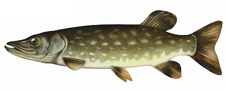
2. Sandacz
Sandacz to ryba z rodziny okoniowatych. Gatunek ten występuje w
Europie od dorzecza Renu i Rodanu do Morza Kaspijskiego oraz w
południowej Anglii. Można go spotkać na terenie całej Polski w
rzekach, jeziorach i zbiornikach zaporowych, a także w płytki wodach
wzdłuż wybrzeża Bałtyku. Żyje głównie w głębokich, mętnych wodach o
twardym dnie; w jeziorach żeruje na głębokości od 2 do 5 metrów.
Charakteryzuje się stosunkowo małą głową i wydłużonym, lekko
spłaszczonym ciałem. Dorasta nawet do 130 centymetrów.
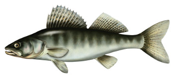
3. Okoń
Okoń to gatunek ryby drapieżnej z rodziny okoniowatych. Ryba ta
występuje w wodach do 1000 m n. p. m. – płynących, stojących i
słonawych wodach przybrzeżnych. Długość okonia wynosi zazwyczaj do 60
cm, a masa do 4,8 kg. Okonie to bardzo żarłoczne ryby – żerują one
całe dnie. Żywią się wszelkimi skorupiakami, a narybek preferuje
plankton czy w późniejszym czasie ikrę innych ryb. Tarło trwa od marca
do czerwca na płyciznach. Samica składa od 12 000 do 300 000 ziaren
ikry, które składane są na kamieniach, roślinach wodnych. Wylęg
następuje po około 2-3 tygodniach.
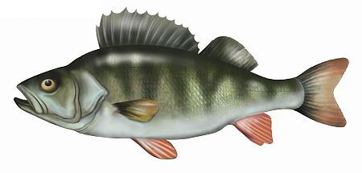
4. sum
Sum pospolity należy do rodziny sumowatych i jest największym,
występującym w naszym kraju, jej przedstawicielem. Ryba może osiągać
nawet ponad 2 metry długości i wagę ponad 100 kilogramów. Sumy są
drapieżnikami. Młode okazy odżywiają się głównie małymi robakami oraz
skorupiakami. Większe okazy zjadają mniejsze ryby, żaby, a nawet małe
ssaki. Tarło sumów przypada na okres od maja to lipca i zawsze ma
miejsce w wodach o temperaturze ponad 20 stopni Celsjusza.
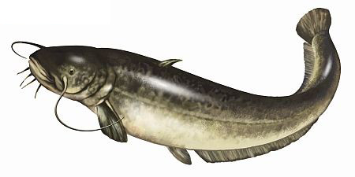
5. karp
Karp jest popularną i dobrze wszystkim znaną rybą, którą niezwykle
chętnie gościmy na wigilijnym stole – stanowi więc cel niejednego
wędkarza udającego się nad wodę. Ryba ta, w swych naturalnych
warunkach, preferuje wody stojące lub wolno płynące – a więc stawy,
zbiorniki, jeziora. Karp potrafi urosnąć do ponad metra długości i
ponad 30 kg masy – największy złowiony ważył 51,2 kg, inny, złowiony w
Polsce, 34,5 kg. Posiada wydłużone ciało i niezwykle długą płetwę
grzbietową, charakterystyczną cechą są dwie pary wąsików. Wyróżnia się
kilka odmian karpia, między innymi lustrzenia, a więc karpia
królewskiego, pełnołuskiego, bezłuskiego czyli golca, koi oraz
zatorskiego. Najczęstszym źródłem pożywienia są liczne larwy owadów,
mięczaki, skorupiaki, glony inne, mniejsze organizmy.
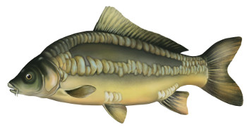
6. leszcz
Leszcz (z łac. Abramis brama) to niewątpliwie jedna z najczęściej
spotykanych ryb żyjących w naszych rodzimych wodach. Dorosłe okazy
dorastają do około 6 a nawet 7 kilogramów i potrafią mierzyć od 70 do
80 centymetrów długości. Dojrzałe osobniki wyróżniają się srebrną
barwą przechodzącą najczęściej w czerń, złoto a czasem miedziany
odcień. Młodsze okazy zaś mienią się czysto srebrzyście Leszcze są
rybami powszechnie występującymi w wodach słodkowodnych, stojących,
takich jak jeziora. Najczęściej w celu osiedlenia wybierają akweny o
mulistym dnie, gdyż na ogół żywią się bezkręgowcami zakopanymi w dnie,
zaś czasami za pokarm wybierają sobie owady osiadające na tafli wody.
Do chwytania pożywienia używają specyficznego pyszczka, który jest
wysuwany w celu złapania ofiary.
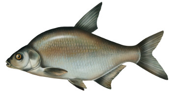
7. karaś
Karaś to gatunek ryby słodkowodnej z rodziny karpiowatych. Występuje w
nizinnych wodach śródlądowych, a także tych wolno płynących oraz
stojących. Toleruje niewielką ilość tlenu, toteż przebywa przy
mulistym i miękkim dnie. Co ciekawe w zbiornikach o wysokiej
zawartości dwutlenku węgla tworzy formę karłowatą, forma ta ma
wysmukłe ciało i długość 9-10 cm. Karaś zazwyczaj osiąga długość około
40-50 cm, a jej masa wynosi od 1 do 2 kg. Ryba ta żywi przede
wszystkim bezkręgowcami wodnymi, które żyją na obszarze mulistego dna.
Tarło ma miejsce od maja do lipca. Samica składa wtedy około 150 000
jaj. Ikra karasia przyczepia się do roślin, a taki okres inkubacji
trwa od 3 do 7 dni. Dojrzałość płciową ryby osiągają w 3-4 roku życia.
Dla karasi okres ochronny, wymiar ochronny czy też limit dobowego
połowu nie występują. Sposoby łowienia tych ryb mogą być zróżnicowane.
Począwszy od metody gruntowej (wędzisko feeder lub picker), a
skończywszy na metodzie spławikowej o wędzisku długości 4-5 metrów.
Najlepszymi przynętami są białe i czerwone robaki, ochotki, kukurydza
oraz pęczak. Należy pamiętać, aby umieszczać przynęty na dnie gdyż
ryby te żerują przydennie. Lipiec i sierpień to idealne miesiące na
połów karasi. Liczebność populacji karasi zależy od warunków
środowiska – w monokulturze może być wielka. Natomiast w środowisku
naturalnym liczebność ta spada ze względu na obecność drapieżników.
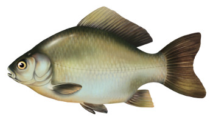
8. amur
Amur biały - Jedną z najbardziej pożądanych przez wędkarzy ryb jest
Amur biały. Co to za ryba? Jest to przedstawiciel gatunku
karpiowatych. Na tereny polskie został sprowadzony około XVI. Dlaczego
jest tak atrakcyjny dla wędkarzy? Amur biały jest niezwykłą rybą.
Osiąga imponujące rozmiary, co powoduje, że korzyści z jego zdobycia
są ogromne. Może osiągać nawet około 150 cm długości i ważyć nawet
50kg. Ryby te żywią się zooplanktonem i roślinnością wodną. Gdzie
szukać amurów? Ryb tych przede wszystkim należy szukać w jeziorach,
stawach czy też płytkich zbiornikach wodnych. Ważne, aby były one
porośnięte bujną roślinnością. To najlepsze środowisko dla tych ryb.
Optymalną temperaturą wody to około 12 stopni Celsjusza. Warto zwrócić
uwagę na to, że ryby te mają podobne wymagania siedliskowe jak karpie.
Dlatego też bardzo często można znaleźć oba te gatunki razem.
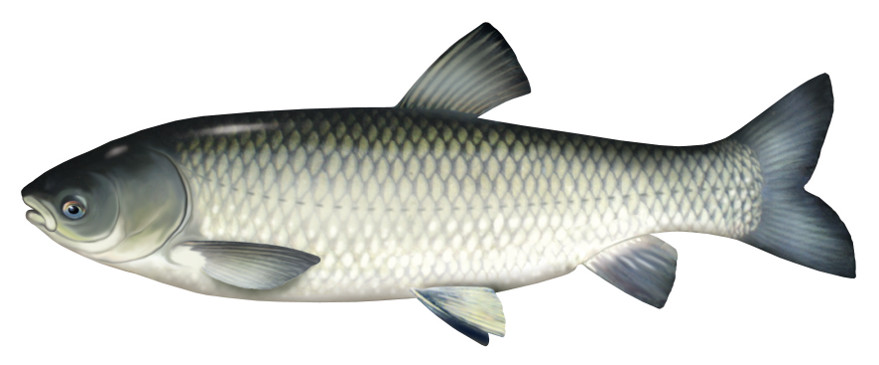
9. płoć
Płoć - Rybia charakterystyka: Wygląd. Płoć posiada mały otwór gębowy,
a jego grzbiet jest szaroniebieski lub zielony. Jego oczy są koloru
czerwonego, albo pomarańczowego. Płetwy mają barwę żółtopomarańczową.
Płocie osiągają masę nawet kilku kilogramów i około 25 cm długości.
Występowanie. Te ryby występują w całej Europie prócz półwyspu
Iberyjskiego, Grecji i północnej Skandynawii. Można ją spotkać we
wszystkich wodach w Polsce, też w wodach w pobliżu Bałtyku.
Rozmnażanie. Samice płoci osiągają dojrzałość płciową w latach od 3 do
4 lat.,a samce około rok wcześniej. Tarło odbywa się na przełomie
kwietnia i maja w temperaturze 15 – 16 C. Ikra składana jest zazwyczaj
na podwodnych roślinach lub kamieniach. Okres połowu. Płocie można
łowić cały rok. Mówi się, że te ryby otwierają i zamykają okres
połowu. Łowione są z pod lodu oraz zaraz po jego zejściu.
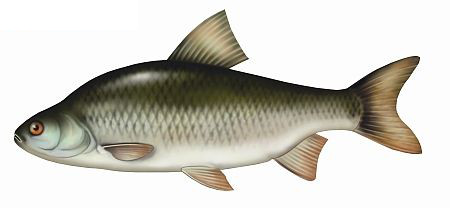
10. lin
Lin to ryba, która charakteryzuje się złoto miedzianą lub złoto
zieloną barwą. Posiadają drobną łuskę, na której jest gruba warstwa
śluzu. Największe liny osiągają wagę około 5 kilogramów, jednak w
Polsce dozwolone jest łowienie mniejszych okazów, które nie
przekraczają 2 kilo wagi. Liny uwielbiają muliste dna, z tego względu
można najczęściej złowić je w jeziorach i stawach. Ryby te najlepiej
łowić od połowy maja do połowy czerwca, potem ryby wchodzą w okres
tarła. Następnie można łowić je późnym latem i wczesną jesienią. Liny
najlepiej biorą w pochmurną pogodę z niewielkim wiatrem lub w nocy.
Jaką przynętę przygotować na lina? Białe lub czerwone robaki,
kukurydza, bułki lub chleb. Lin także skusi się na zanętę w postaci
sypkiej – kupimy ją w każdym sklepie wędkarskim. Liny najlepiej łowić
na zestaw z spławikiem przy użyciu łódki. Nic nie stoi także na
przeszkodzie, aby rybę tą łowić z gruntu. Jednakże warto pamiętać o
wymiarach i okresach ochronnych tych ryb. Wymiar ochronny wynosi 25
centymetrów, zaś okresu ochronnego nie ma. Jako ciekawostkę na sam
koniec dodamy, że największy lin złowiony w Polsce miał 65 centymetrów
i 4,50 kilograma. Jeśli chcesz spróbować swoich sił w złowieniu tej
ryby to nic nie stoi na przeszkodzie – do dzieła, z pewnością będziesz
bardzo zadowolony z złowionego okazu.
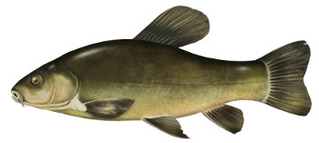
11. boleń
Boleń to gatunek ryby z rodziny karpiowatych. Miejsce występowania
boleni to rzeki nizinne, zbiorniki zaporowe, jeziora oraz zatoki. W
porach zimnych przebywa na głębszych wodach, a w porach cieplejszych
trzyma się bliżej powierzchni. Długość ryb wynosi od 50 do 75 cm, a
masa sięga 12 kg. Ich charakterystyczną cechą jest spłaszczone ciało.
Żywią się skorupiakami, larwami owadów lub wrotkami. Bolenie często
żerują pod powierzchnią wody, a tym samym zdradzają swoje położenie.
Po osiągnięciu odpowiedniej długości to jest 9 cm bolenie zaczynają
odżywiać się rybami. Tarło odbywa się od marca do maja w rzekach o
szybkim nurcie oraz kamienistym dnie. Samce mają wysypkę tarłową
umiejscowioną na płetwach piersiowych i wieczkach skrzelowych.
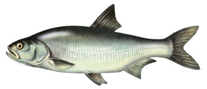
12. brzana
Brzana to gatunek ryby słodkowodnej z rodziny karpiowatych. Cechą
charakterystyczną ryby jest ryjkowaty pysk, gruba dolna warga oraz
cztery wąsiki nad górną wargą. Brzanę można również rozpoznać po
oliwkowym, a niekiedy także brązowym grzbiecie. Boki są barwy złotej,
a płetwy ogonowe i grzbietowe są szare. Budowa ciała brzany jest
przystosowana do życia przydennego. Naturalnym środowiskiem są rzeki –
młodsze osobniki przebywają zazwyczaj bliżej brzegu, a starsze
osobniki preferują głębszą wodę.
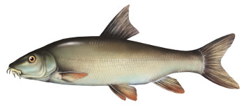
13. jaź
Jaź to gatunek ryby słodkowodnej z rodziny karpiowatych. Występuje w
kanałach, jeziorach czy też rzekach. Preferuje wody płynące oraz słone
wody przy ujściach rzek. W porach cieplejszych pływa bliżej
powierzchni, a w porach zimniejszych znajduje się na większej
głębokości. Ryba ta bytuje w czystych ujściach dopływów rzek. Jaź
osiąga długość rzędu 40-50 cm, a jego masa waha się w granicach od 2
do 5 kg. Żywi się przede wszystkim skorupiakami, owadami i mięczakami.
Niekiedy spożywa także małe ryby. Najskuteczniejszymi przynęty są
między innymi groch, pinki, żywe owady. Natomiast najlepszymi zanętami
są zdecydowanie mieszanki na ryby karpiowate oraz sypkie mieszanki
jaziowo – kleniowe.
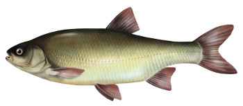
14. pstrąg
Pstrąg potokowy jest rybą słodkowodną z rodziny łososiowatych. Ryba ta
występuje w górskich potokach Tatr, Beskidów; rzekach Pomorza
Zachodniego i Środkowego; na Warmii i Mazurach czy też w dopływach
Warty. Maksymalna długość pstrąga potokowego wynosi około 80 cm, a
waga około 5 kg. Ubarwienie zależne jest od miejsca przebywania.
Główny pokarm stanowią skorupiaki, owady i ich larwy.
Charakterystyczne dla pstrąga potokowego jest przechodzenie na pokarm
sezonowy. Przykładowo wiosną ryby te żywią się wybudzonymi ze snu
zimowego żabami. Maj to idealna pora na spożycie jętki majowej, w
lipcu i sierpniu żywią się małymi rybami. Tarło rozpoczyna się wraz z
nadejściem jesieni, kiedy to wykonuje wędrówki tarłowe do niewielkich
dopływów ze żwirowym dnem.
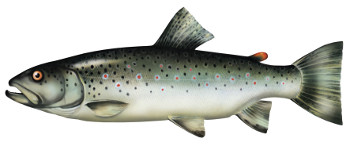
15. dorsz
Dorsz atlantycki to słonowodna ryba drapieżna występująca przede
wszystkim w Oceanie Atlantyckim oraz Morzu Bałtyckim i Północnym.
Należy do gatunków wędrownych. Z powodu dużego zagęszczenia dorsz stał
się podstawowym poławianym gatunkiem w wodach Bałtyku. Dzięki niemu
szanse miały także na rozwój cywilizacje powstające na północnym
wybrzeżu Atlantyku. Aż do dzisiaj jest rybą o dużym znaczeniu
gospodarczym. Dorsz ma silnie wydłużone ciało, które na przekroju
przypomina owal. Jego ubarwienie zależne jest od podgatunku z jakim ma
się do czynienia – może być brązowe, oliwkowe lub zielone. Na całej
długości ciała ma też liczne plamki. Jako że dorsz to ryba drapieżna,
odżywia się on głównie mniejszymi od siebie rybami, takimi jak śledzie
czy makrele, ale też małymi skorupiakami.
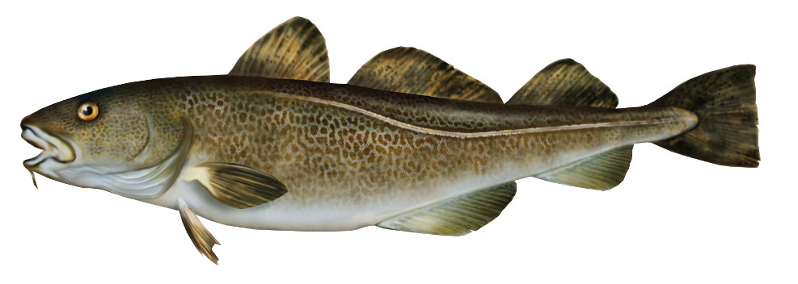